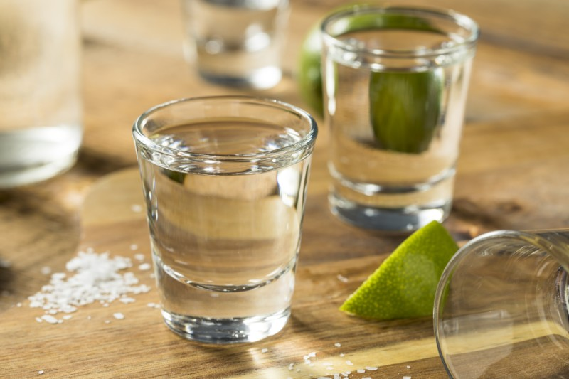

| Comida |
Descripcion |
Imagen |
| La Crucecita |
En este pueblo, que es el corazón de las bahías de Huatulco, encontrarás desde los clásicos antojitos mexicanos, incluyendo la suculenta comida regional, hasta exclusivos restaurantes de cocina internacional. La mayoría de los restaurantes y rincones gastronómicos se encuentran alrededor de la plaza, por lo que el ambiente de pueblo mexicano crea una atmósfera que hace
la experiencia de comer realmente memorable. |
 |
| Pescados y mariscos |
En toda esta zona encontrarás los mejores frutos del mar con total frescura, varias de las bahías ofrecen ricos platillos basados en estos productos bajo la sombra de refrescantes palapas que con la vista al mar crean un ambiente que enaltece aún más el sabor de tus mariscos. Visita las bahías de Santa Cruz y San Agustín, donde podrás encontrar varios de estos
restaurantes, además del pueblo La Crucecita. |
 |
| Mezcal |
La bebida más tradicional de Oaxaca la puedes encontrar en muchos lugares de Huatulco. Este licor se obtiene de la destilación de la penca del agave o maguey, siendo el tequila tan sólo uno de los numerosos tipos de mezcal que existen. Varían en calidad y precio dependiendo del proceso que requieran. En La Crucecita encontrarás algunos de los mejores a muy buen precio,
además de que muchos hoteles de Huatulco también ofrecen excelentes opciones. |
 |